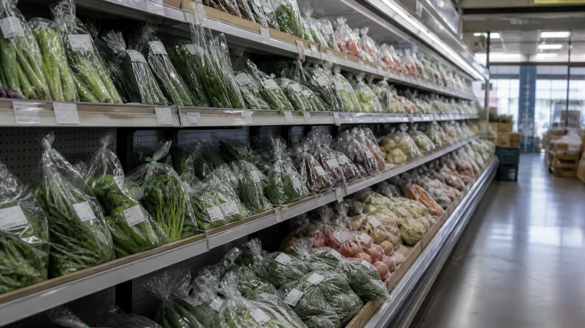
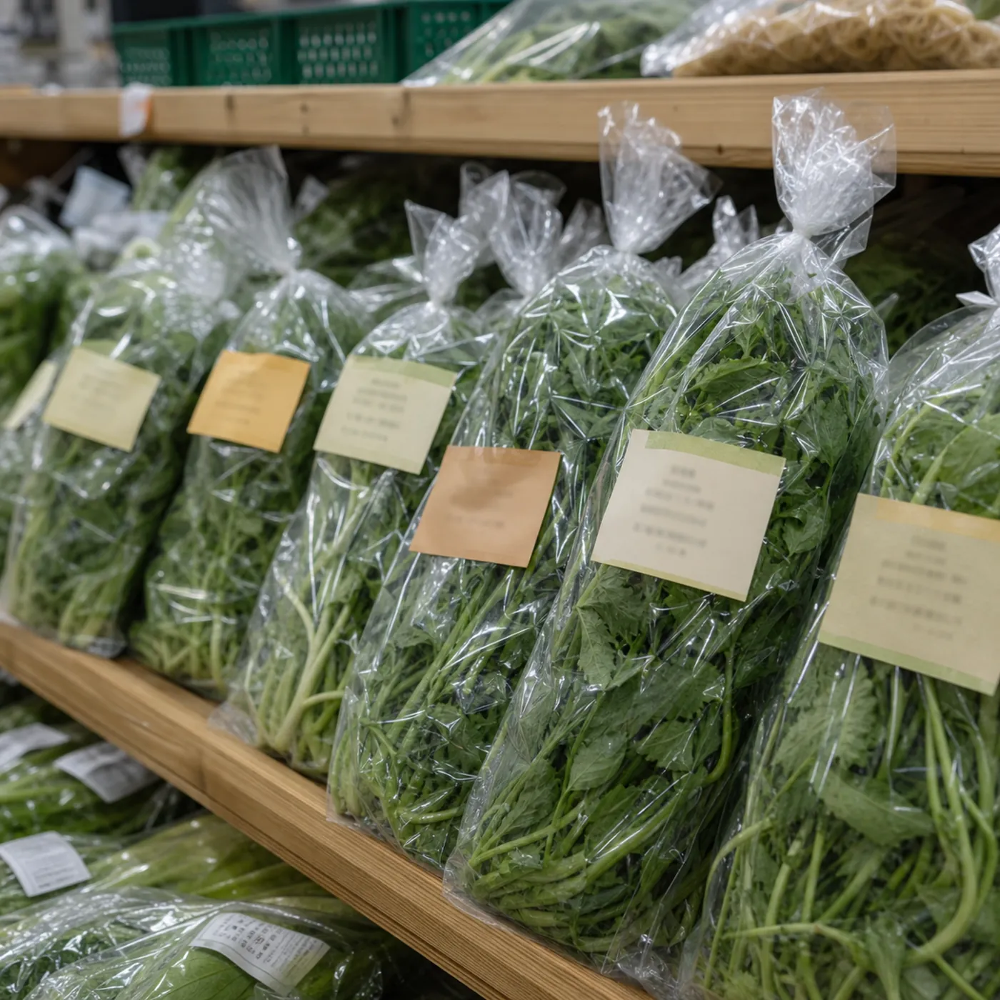
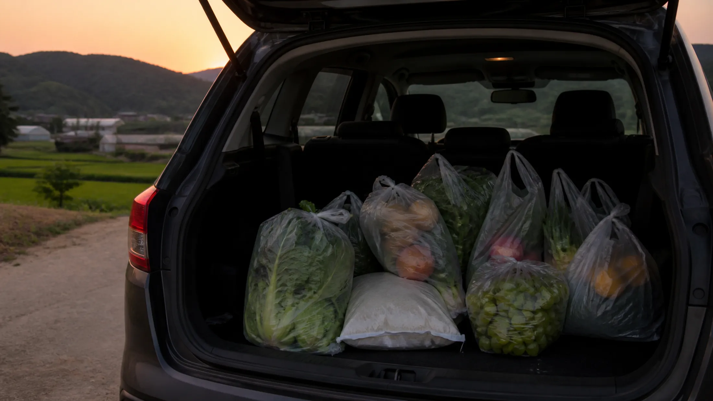

THE BASKET
돌아오는 길에 트렁크가 무거웠다
한 그릇이 여행의 시작이었다면, 장바구니는 그 맛을 집으로 이어가는 방법이다.
그리고 9월은 명절 선물 시즌으로 넘어가는 달이다. 안성마춤 다섯 품목은 공교롭게도 명절 선물 목록과 그대로 겹친다. 여행길에 눈으로 봐 두면 9월이 한결 편해진다.
글 안성마춤 웹진 편집부 · 사진 안성마춤 웹진 편집부
WHAT TO BUY
무엇을 담을까 — 안성마춤 다섯
품목과 장소를 한 목록에 섞지 않았다. 먼저 무엇을 볼지, 그다음 어디서 살지를 나눈다. 다섯은 접혀 있으면 또 안 읽힌다. 스크롤로 훑는 편이 맞다.
🍇 포도
품종부터 여쭙는다
품종과 수확일, 보관 방법을 파는 분께 여쭙는다. 같은 안성산이어도 농가와 출하 시기에 따라 맛이 다르다. 캠벨·거봉·샤인머스캣은 사실상 다른 과일이다.
🌾 쌀
도정일을 본다
포장지의 생산 정보와 도정일을 본다. 국밥에서 국물만큼 밥이 중요하다는 걸 알게 된 뒤라면 이 습관이 생긴다. 소비 속도를 생각해 양을 고르는 게 신선하게 먹는 요령이다.
🍐 배
같은 크기라면 무거운 쪽
05 PAIRING의 초무침 재료다. 늦여름부터 나오기 시작한다. 고를 때는 무게를 본다. 같은 크기라면 무거운 쪽이 수분이 많다.
🥩 한우
국거리가 여기서 나온다
04 HOME TABLE에서 쓰는 국거리가 여기서 나온다. 집에서 국밥을 끓일 생각이라면 이 코너를 그냥 지나치기 어렵다.
🌿 인삼
직매장을 따로 둘 만큼
안성인삼농협이 별도 직매장을 운영할 만큼 자리 잡은 품목이다. 수삼·홍삼·가공품 중 무엇이 나와 있는지는 매대마다 다르다.

WHERE TO BUY
어디서 살까
시장은 눈으로 훑고, 직매장에서 담는 편이 편하다. 세 곳은 역할이 다르다.
01 · 안성시장
장날의 청과와 채소
채소와 과일 사이에 생활용품 좌판이 섞여 선다. 다만 모든 물건이 안성산은 아니다. 지역 농산물을 찾는다면 원산지와 생산자를 확인해야 한다.
- 주소
안성시 인지2길 16 일대 네이버 지도
- 9월 주말 장날
12일(토) · 27일(일)
- 이어 보기
02 · 대덕농협 로컬푸드 직매장
봉지마다 이름이 있다
곡류·채소·과일·축산물·가공식품이 있다. 농가가 직접 포장하고 직접 가격을 붙여 내놓는 구조라 봉지마다 이름이 있다. 입점 품목과 재고는 날마다 달라진다.
- 주소
안성시 고수1로 43 네이버 지도
- 영업시간 · 휴무
방문 당일 현장에서 확인
03 · 안성인삼농협 로컬푸드 직매장
이름대로 인삼이 가깝다
같은 직매장 구조다. 이름대로 인삼 품목이 가깝고, 곡류와 채소, 가공식품도 함께 선다. 어떤 형태가 나와 있는지는 그날 매대를 봐야 안다.
- 주소
공도읍 서동대로 4469 네이버 지도
- 영업시간 · 휴무
방문 당일 현장에서 확인

SUMMER TIPS
여름 장보기 실전 팁
- 보냉 가방
보냉 가방은 필수. 8월 말 신선식품은 이동 시간이 곧 품질이다
- 순서
무거운 건 마지막에. 시장에서는 눈으로만, 직매장에서 몰아서, 차로 바로
- 가격과 재고
가격과 재고는 그날 그 자리에서 확인한다
